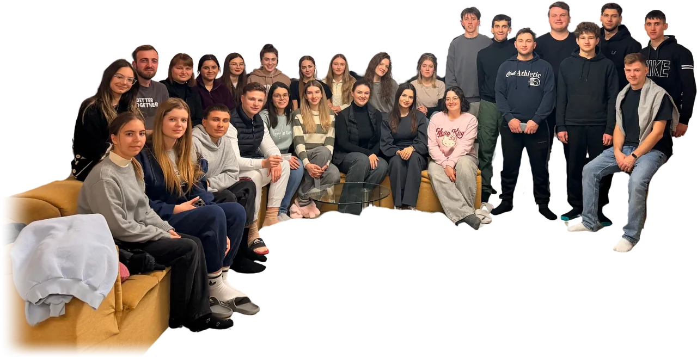

15–16 ianuarie · Vatra, tabăra Bethel
Tabăra de casă a tineretului Betania
O invitație de a fi împreună.

Invitația
Câteva zile în care lăsăm grijile deoparte și suntem, pur și simplu, împreună. Cu prieteni vechi și prieteni noi, cu discuții sincere, râsete până târziu și timp petrecut în prezența lui Dumnezeu.
Tabăra de casă este locul în care ne cunoaștem mai bine, ne rugăm unii pentru alții și descoperim că nu suntem singuri. Nu contează dacă ești în tineret de puțin timp sau de ani buni — aici e loc pentru tine, exact așa cum ești.
-
Comunitate
Oameni care te primesc cu drag, te ascultă și se bucură că ești acolo.
-
Prietenie
Discuții la o cană de ceai care se transformă în prietenii pentru o viață.
-
Credință
Timp pentru Cuvânt, pentru rugăciune și pentru întrebările care contează cu adevărat.
-
Amintiri
Seri lungi, jocuri și momente pe care le vei povesti ani la rând.
Comunitatea
Aceștia suntem noi.
Tineri diferiți, cu povești diferite — uniți de aceeași credință și de bucuria de a fi împreună.
- Oameni diferiți.
- Povești diferite.
- O singură familie.
Detalii
Tot ce trebuie să știi.
Tabăra este pentru membrii tineretului Betania. Înscrie-te prin formular, ca să putem pregăti totul pentru tine.
- Data
- 15–16 ianuarie
- Locația
- Vatra, tabăra Bethel
- Ora de început
- 19:00
- Înscrierea
- Completează formularul
- Contact
- Pentru mai multe informații, contactați liderii de tineret.
Te așteptăm
Am păstrat un loc pentru tine.
Vino așa cum ești, cu întrebările și cu bucuria ta. Restul îl descoperim împreună.
„Iată ce plăcut și ce dulce este să locuiască frații împreună!”